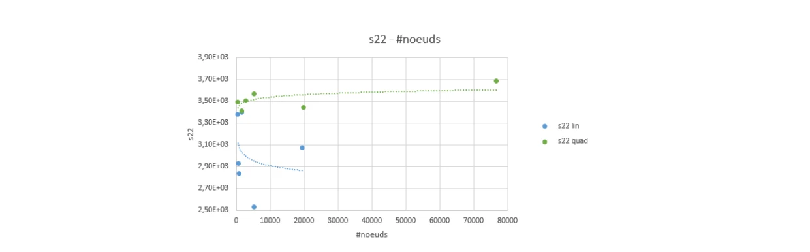
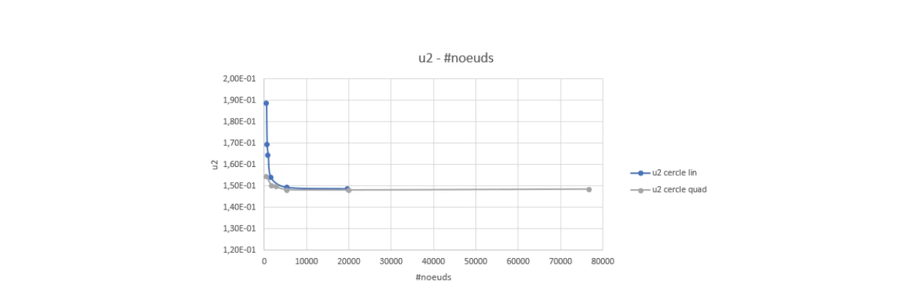

Engineering question
How does mesh density and interpolation order affect the stability of finite-element outputs in a compact tension (CT) specimen? The objective was to find a reasonable accuracy–cost compromise for displacement results, while identifying limits in interpreting local stresses.
Model and method
The Abaqus/Standard study used a 2D plane-strain, half-symmetry model of a titanium specimen. A rigid loading pin contacted the specimen bore through frictionless surface-to-surface contact. A vertical displacement of 0.20 mm was applied to the pin; the symmetry line was constrained in the vertical direction.
Linear and quadratic triangular elements were studied at six global sizes from 1.50 mm to 0.15 mm. The outputs were displacement U2 at selected nodes and local stress S22 at a selected location. Relative change was computed between successive mesh refinements; it is not an error against an analytical reference solution.
Key result. At a 0.9 mm mesh size, quadratic elements showed a 0.394% relative U2 change with 2,764 nodes. Linear elements showed 0.462% at 0.15 mm with 19,531 nodes. The comparison illustrates faster apparent displacement convergence for the quadratic formulation.
Selected simulation results
| Elements | Size | Nodes | U2 change | S22 change |
|---|---|---|---|---|
| Linear | 0.90 mm | 892 | 3.084% | 3.188% |
| Linear | 0.15 mm | 19,531 | 0.462% | 17.812% |
| Quadratic | 0.90 mm | 2,764 | 0.394% | 2.825% |
| Quadratic | 0.15 mm | 76,681 | 0.290% | 6.480% |


Interpretation and limitations
While quadratic elements were more economical for the selected displacement measure, the local S22 indicator did not stabilise with global refinement. The original report discusses a possible local stress singularity or a poorly chosen stress extraction node. Targeted local refinement and revised extraction criteria are needed before making a reliable stress-based design conclusion.
Collaborative ENIM coursework completed by two students in 2026; this page documents a shared project rather than claiming sole authorship. No fracture-toughness value or validated safety factor is asserted.
Technical reports
Read the short English overview directly below. The original French coursework report is also provided for methodological details and complete tabulated results.
PDF viewer support depends on the browser. If it does not appear above, use “Open English report”. The original report identifies the other student and the course instructor; obtain any necessary permission before making that file public.